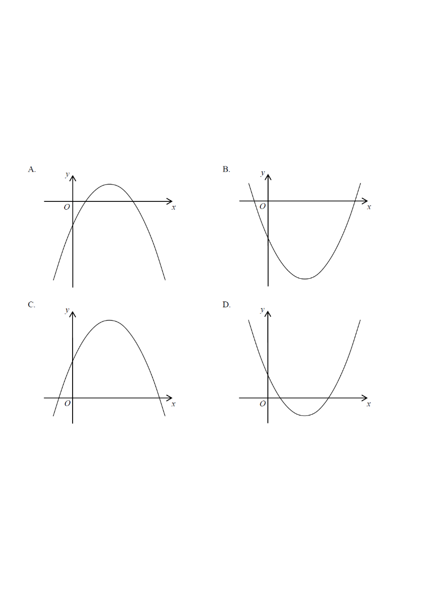

It is given that $a>0$. If $y=(ax+1)^2+a$, which of the following may represent
the graph of $y$ against $x$?

Figure (original exam diagram)
A. opens downward, $y$-intercept negative
B. opens downward, $y$-intercept positive
C. opens upward, $y$-intercept negative
D. opens upward, $y$-intercept positive
Step 1Expand the expression.
$y=(ax+1)^2+a = a^2x^2+2ax+(1+a)$
Hint: expand first so you can read off the coefficient of $x^2$ and the constant term.
Step 2Look at the coefficient of $x^2$.
Sign of the Leading Coefficient of a Quadratic\(y=ax^{2}+bx+c\ \text{opens upwards if }a>0,\ \text{downwards if }a<0\)The coefficient of \(x^{2}\) here is \(a^{2}>0\), so the parabola opens upwards.
Coefficient of $x^2 = a^2 > 0$ (since $a>0$, $a^2$ is never $0$ and is positive).
$\therefore$ the parabola opens upwards. ⇒ eliminates A and B.
A positive leading coefficient always makes a "smile" shape.
Step 3Look at the constant term ($y$-intercept).
y-Intercept of a Quadratic Graph\(\text{put }x=0:\quad y=c\ \text{for }y=ax^{2}+bx+c\)The constant term is \(1+a\), which is positive because \(a>0\).
Put $x=0$: $y=(0+1)^2+a = 1+a$.
Since $a>0$, the $y$-intercept $=1+a>0$, i.e. it is positive. ⇒ eliminates C.
The constant term is exactly the $y$-value where the curve crosses the $y$-axis.
Step 4Check the vertex (extra confirmation).
Vertex Form of a Quadratic\(y=a(x-h)^{2}+k\ \Longrightarrow\ \text{vertex }(h,k)\)Writing \(y=a^{2}\left(x+\dfrac{1}{a}\right)^{2}+1\) shows the minimum value is \(1>0\).
Complete the square: $y=a^2\!\left(x+\dfrac{1}{a}\right)^2+1$.
Vertex $=\left(-\dfrac{1}{a},\ 1\right)$, always above the $x$-axis. So the whole curve lies above $y=0$.
The minimum value is $+1$, consistent with an upward, positive-$y$ parabola.
Step 5Conclusion.
The graph opens upwards and has a positive $y$-intercept — exactly option D.
Answer: D — opens upwards with a positive $y$-intercept.
PRACTICESimilar question — try it yourself
Question. It is given that \(b>0\). Which of the following describes the graph of \(y=(bx+2)^{2}+b\)? A. It opens downwards and cuts the \(x\)-axis twice. B. It opens upwards and has a positive \(y\)-intercept. C. It opens upwards and touches the \(x\)-axis. D. It opens downwards and has a negative \(y\)-intercept. [1 mark]
Show the worked solution
Step 1. Expand: \(y=b^{2}x^{2}+4bx+(4+b)\), so the coefficient of \(x^{2}\) is \(b^{2}\).
Step 2. Since \(b>0\), \(b^{2}>0\), so the parabola opens upwards (this removes A and D).
Step 3. Put \(x=0\): the \(y\)-intercept is \(4+b>0\), which is positive.
Step 4. Complete the square: \(y=b^{2}\left(x+\dfrac{2}{b}\right)^{2}+b\), so the minimum value is \(b>0\); the curve never reaches the \(x\)-axis, so C is false.
Step 5. Only B describes the graph.
Answer: B \u2014 opens upwards with a positive \(y\)-intercept (minimum value \(b>0\))